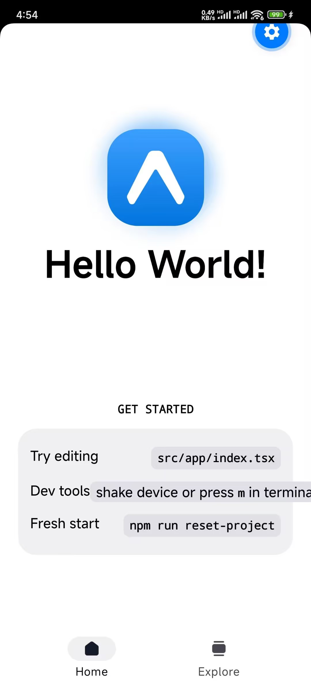
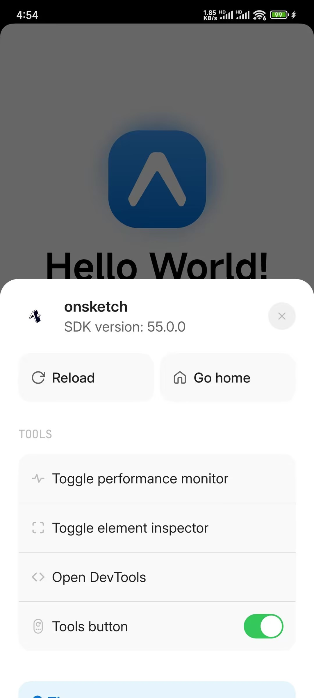
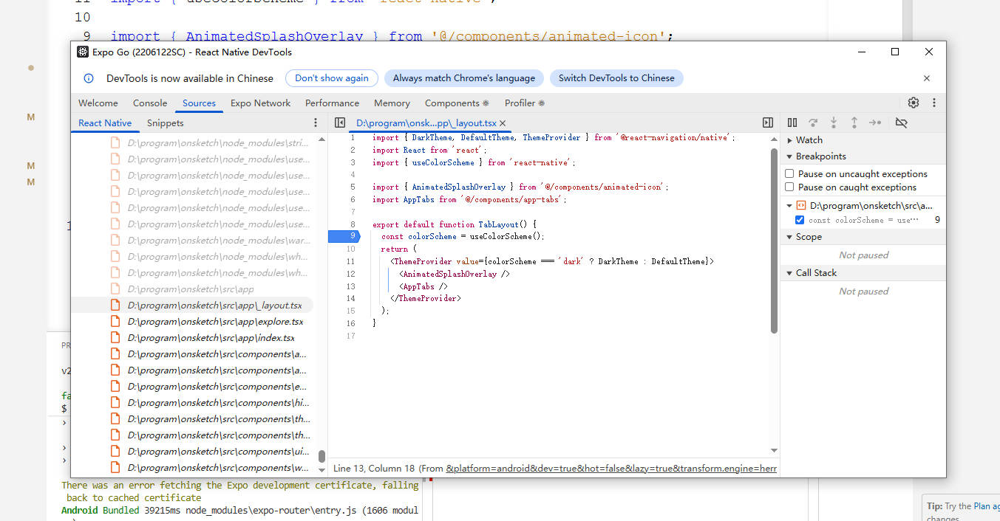

Reactive Native 和 Expo 初体验（二） #
启动 App #
在用脚手架搭建了一个新的 Expo 项目后，执行 npx expo start 命令，会出现以下内容：
▄▄▄▄▄▄▄▄▄▄▄▄▄▄▄▄▄▄▄▄▄▄▄▄▄▄▄▄▄▄▄▄▄▄▄
█ ▄▄▄▄▄ █▀ ▄▄ ▀▀█▄█▄█▀▀▄▀█ ▄▄▄▄▄ █
█ █ █ █▀▄█▀▄▀█ ▀▀█▀▄▄ █▄█ █ █ █
█ █▄▄▄█ █▀▀▄▄▄▀▄▀▀▄ ▄▄ ▀▄██ █▄▄▄█ █
█▄▄▄▄▄▄▄█▄▀▄█ █▄▀▄█ ▀▄▀ ▀▄█▄▄▄▄▄▄▄█
█▄ ▄ █▄▄▄▀▀█▄▄▀▄▄▄█▀ █▄ ▄▄▀▄█ █▄▀█
██▀ ▀ ▄▄ ▀▀▀██▄▀█▀█ ▀▄█▄ ██ ▀ ▀█
█▄▄ ███▄▄▄▄█▀▀ ▀ ▀▄█▀ ▀ ▄ ▀ ▄▀██ █
█▄██ ▄▄ █ ███▀▄██▀▀ ▄███▄█ ▀▀███
█▀▀ █▀ ▄█▀█▀▀ █▄▄▄█ ▄██▀▄ ▀ ▄▄▀▀▀█
█▄█▄▀ ▀▄█▀ ▄▀█▄▄ █ ▀ ▀▄██ ▀▄██
█ ▀█▄█▄▄ ▄█▀▀▀▄▀▄█▄ █▀▄▀█▄▀▀▄██▀ █
█ █▄▀█▀▄▄ █▀██▀▄▀███▀▀▀██ ▀ ▀ ██
█▄█▄█▄█▄█▀▀▀▀▀▄▀ ▀▄▄▀ █▄█ ▄▄▄ ▀▀▄▀█
█ ▄▄▄▄▄ █▄▄ █▀█▄▄█▄▄▀▀ ▄ █▄█ ▄▀█
█ █ █ █ ▀ ▀▀▄▀▄▄█▀ ▀█▄█ ▄▄ ▀▄▄█
█ █▄▄▄█ █ ▄▄▀▄█▄ █▄█ ▀▄▄▀ █▀▀ ▄██
█▄▄▄▄▄▄▄█▄▄▄▄▄▄█▄█▄▄███▄▄▄▄█▄███▄██
› Scan the QR code above to open in a development build. (Learn more: https://expo.fyi/start)
› Metro: exp+onsketch://expo-development-client/?url=http%3A%2F%2F10.209.144.177%3A8081
› Web: http://localhost:8081
› Using development build
› Press s │ switch to Expo Go
› Press a │ open Android
› Press w │ open web
› Press j │ open debugger
› Press r │ reload app
› Press m │ toggle menu
› shift+m │ more tools
› Press o │ open project code in your editor
› Press ? │ show all commands
一个二维码后面打印了一系列可以在当前 CLI 使用的命令（快捷键）。
Using development build 这句话表示当前是 development build 模式，紧随着下面一句话 Press s | switch to Expo Go，表示我们可以通过 s 切换到 Expo Go 模式，此时二维码会变成 Expo go 模式的二维码。
Expo Go 和 Development build #
我用 web 开发来类比说明 Expo Go 和 Development Build 的区别。
Expo Go：就像是一个“通用的浏览器” #
想象一下，你写了一个网页，你不需要自己去开发一个 Chrome 浏览器，你只需要把代码放到服务器上，然后让用户用他们手机里现成的 Chrome 打开就行了。
Expo Go 就是那个现成的“Chrome 浏览器”。它是一个已经在 App Store / Google Play 上架的 App。它里面预装了 Expo 官方提供的所有标准功能（比如相机、地图、定位、通知等 SDK）。开发体验：你写的 JS/React 代码，通过 Wi-Fi 传输给 Expo Go，它立马就能运行渲染，就像 Web 的热更新（HMR）一样快。
✅ 适用场景：
- 项目初期，快速验证想法。
- 你只使用了 Expo SDK 提供的标准库（绝大多数通用功能都有）。
- 你不需要修改 Android 或 iOS 的底层原生配置（比如 AndroidManifest.xml 或 Info.plist）
❌ 局限性：
- 如果你想接一个非常冷门的第三方 SDK（比如某个特定厂商的蓝牙打印机 SDK，且没有 Expo 插件），Expo Go 里没有预装这个原生代码，你就跑不起来。
Development Build：就像是“你自己定制的浏览器” #
假设你的网页用到了一个极其特殊的黑科技，Chrome 浏览器本身不支持，你需要修改 Chrome 的源码，给它加个补丁，重新编译一个专属的“MyChrome”浏览器才能跑你的网页。
Development Build 就是那个你编译出来的“MyChrome”。它是一个你自己构建的、安装在手机上的 .apk (Android) 或 .ipa (iOS) 开发包。它包含了你项目所需的特定原生代码依赖。
✅ 适合场景：
- 当安装了一个库，而这个库在其文档里说：“需要运行 npx pod-install” 或者 “需要链接原生模块” 时。
- 你需要用到 Expo Go 标准版里没有包含的第三方原生 SDK（比如微信登录 SDK、极光推送、某些特殊的蓝牙硬件库）。
- 你需要深度修改原生配置。
❌ 缺点：
- 需要配置原生开发环境（Android Studio / Xcode），或者使用云构建（EAS Build）。
- 每次添加新的原生库，都需要重新构建一遍 App 并重新安装到手机上（不像 Expo Go 那样随时扫码就能跑）。
什么时候会启用 Development Build 模式呢？
当项目中安装了
expo-dev-client这个库时，expo cli 会默认以为我们要搞高端操作，会自动启动 development build 模式。如果启动了 Development build 模式，通过s可以切换到 Expo Go 模式。
总结：
- 阶段一（90% 的时间）：坚持使用 Expo Go
- 阶段二（遇到瓶颈）：切换到 Development Build，只有当发现：“完了，这个功能（比如微信支付）Expo Go 支持不了，我必须引入原生库”时。才需要去折腾 Development Build。
Debug #
好的程序是调试出来的
在 web 端，按 F12 可以打开 chrome dev tool 进行调试，那么 Expo Go 如何进行调试呢？
1、用 Expo Go 模式启动项目
2、手机 Expo Go 扫描二维码，打开开发的 app

3、摇晃手机，弹出开发工具

4、点击 Open DevTools，电脑会弹出 debug 工具

（完）